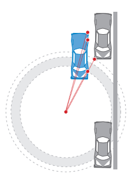
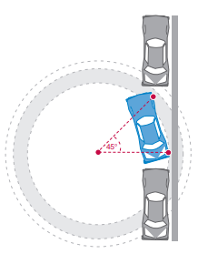
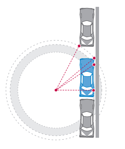
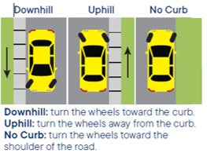
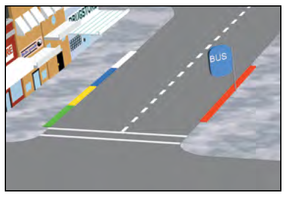
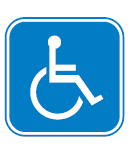
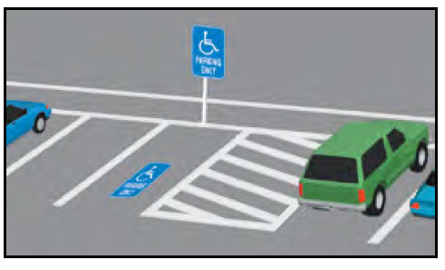
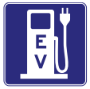

Parking
Parallel Parking
Parallel parking is when you park in line with the road and other parked vehicles. To parallel park:
1. Find a space. Look for a space at least three feet longer than your vehicle. When you find a space, turn on your signal to show that you plan on parking.
2. Pull up alongside the vehicle in front of the space. Leave about two feet between your vehicle and the vehicle next to you. Stop once your rear bumper is aligned with the front of your parking space. Keep your signal on.

3. Check your blind spots. Look in your rearview mirror and over your shoulder for approaching vehicles and pedestrians.
4. Begin backing up. Turn your steering wheel to back into the space at about a 45-degree angle.

5. Straighten out. Begin turning the steering wheel away from the curb when your rear wheel is within 18 inches of the curb. You may need to pull forward and backward to straighten out. Your vehicle should now be parallel and within 18 inches of the curb.

Turn off your vehicle and set the parking brake. Before you exit your vehicle, look carefully for passing vehicles, bicycles, and motorcycles. Exit when safe.
Straight Line Backing
To back up in a straight line:
- Traffic check. Observe traffic and check appropriate blind spots.
- Signal. Activate the turn signal before pulling up to the curb. Cancel the turn signal once completed.
- Check your blind spots. Look in your rearview mirror and over your shoulder for approaching vehicles and pedestrians.
- Begin backing up. Back in a straight line for three vehicle lengths while remaining within three feet of the curb. Stay aware of what is behind you when backing up.
- Control. To maintain control of the vehicle, back at a smooth, safe speed and adjust the steering wheel when needed. Practice until you can keep the vehicle straight. Repeat steps 1 and 2 to pull away from the curb.
Parking on a Hill

When you park on a hill, your vehicle could roll due to equipment failure. Remember to set the parking brake and leave the vehicle in park, or in gear for manual transmission. To park:
- On a sloping driveway: Turn the wheels so the vehicle will not roll into the street, leave the vehicle in park and set the parking brake.
- Headed downhill: Turn your front wheels into the curb or right toward the side of the road.
- Headed uphill: Turn your front wheels away from the curb (left-towards the center of the road) and let your vehicle roll back a few inches. The wheel should gently touch the curb.
- Headed either uphill or downhill when there is no curb: Turn the wheels to the right so the vehicle will roll away from the center of the road if the brakes fail.
Parking at Colored Curbs
Painted colored curbs have special parking rules.

- White: Stop only long enough to pick up or drop off passengers.
- Green: Park for a limited time. The time limit may be posted on signs or painted on the curb.
- Yellow: Load and unload passengers and freight. Do not stop longer than the time posted. If you drive a noncommercial vehicle, you are usually required to stay with your vehicle.
- Red: No stopping, standing, or parking. Buses may stop at a red zone marked for buses only.
-
Blue: Parking for a disabled person or someone driving a disabled person with a special placard or special license plate.
- To learn more about disabled parking placards and license plates, visit dmv.ca.gov/disabled-person-parking.


Example of crosshatched (diagonal lines) area.
Illegal Parking
Never park or leave your vehicle:
- Where a NO PARKING sign is posted.
- On a marked or unmarked crosswalk.
- On a sidewalk, partially blocking a sidewalk, or in front of a driveway.
- Within three feet of a sidewalk ramp for disabled persons.
- In front of or on a curb that provides wheelchair access to a sidewalk.
- In the crosshatched (diagonal lines) area next to a designated disabled parking space.
- In a space designated for parking or fueling zero-emission vehicles, unless you are driving a zero-emission vehicle.
- In a tunnel or on a bridge, unless permitted by signs.
- Within 15 feet of a fire hydrant or fire station driveway.
- Within 20 feet of an unmarked or marked crosswalk, or within 15 feet of a crosswalk where a curb extension is present.
- Between a safety zone and curb.
- Double parked.
-
On the wrong side of the street or on a freeway, except:
- In an emergency.
- When a law enforcement officer requires a stop.
- Where a stop is specifically permitted.
If you must stop on a freeway, park completely off the pavement and stay in your vehicle with the doors locked until help arrives. A vehicle that is stopped, parked, or left standing on a freeway for more than four hours may be removed.
Electric Vehicles
Local authorities can reserve parking spaces on public streets for electric vehicle charging.

Driving Green
Maximize your fuel efficiency while helping to lower emissions by following these practices:
- Speed up and slow down smoothly. Drive at a steady speed.
- Regularly inflate your tires, get oil changes, and check filters.
- Get rid of extra weight in your vehicle.
For more information, visit fueleconomy.gov.
Law Enforcement Stops
During a Law Enforcement Stop
- Turn on your right turn signal to acknowledge that you see the officer.
- Move completely onto the right shoulder, even if in the carpool/HOV lane. Stop in a well-lit area when possible.
- Turn off your radio.
- Remain inside your vehicle unless directed to get out by the officer.
- Roll down your window after stopping your vehicle and before the officer makes contact with you.
- The driver and all passengers should place their hands in clear view before the officer makes contact with them.
Law enforcement officers must state the reason for a traffic or pedestrian stop before they begin any questioning related to a criminal investigation or traffic violation. An exception is made if an officer reasonably believes withholding the reason is necessary to protect life or property from imminent threat. The reason for the stop must be documented on the traffic citation also known as a traffic ticket issued or law enforcement report completed.
Your Rights During the Enforcement Stop
If an officer asks your permission to do something, you have a right to say no. However, if you say no and the officer says they are going to do it anyway, you do not have a right to interfere with their actions. For example, an officer may request to search part or all of your vehicle. You have a right to decline that request, but the officer may have the legal authority to search your vehicle under certain circumstances. If you do not want the officer to search your vehicle, you should clearly say that you do not give your permission, but you do not have a right to resist or obstruct the officer if they search your vehicle.
The driver of a stopped vehicle must produce a driver’s license, proof of insurance, and vehicle registration when stopped by law enforcement. If a driver does not produce these documents, officers may conduct a limited search for them. An officer may also request the names or identification of passengers. Passengers can decline that request, but under some circumstances the passengers may be required to identify themselves. If passengers do not want to produce their identification, they should clearly say so. Passengers should not interfere with the officer’s duties in conducting the traffic stop, and if an officer demands identification, passengers should not interfere with the officer’s actions. During a traffic stop, an officer can legally require the driver and all passengers to exit or stay inside the vehicle. If you are told to exit the vehicle or stay inside, you must do so.
In California, only federal law enforcement officers can ask you about your immigration status. California law prohibits state and local officers from asking drivers or passengers about their immigration status. If a California law enforcement officer asks you about your immigration status, you can decline to answer.
In general, the First Amendment protects the right of drivers and passengers to record interactions with law enforcement in public spaces. If you are recording, you should immediately make that clear. You do not have a right to interfere with the officer’s lawful duties during the enforcement stop, and you should not reach into concealed areas to retrieve your recording device without the officer’s permission. If your recording is not interfering with the officer’s ability to lawfully do their job, an officer cannot confiscate your recording device, delete the recording, or destroy the device just because you are using it to record. In general, you also have the right to deny a request to unlock a cellular phone or provide a password to it, though under some circumstances, such as if you are on parole, you may have to give permission in response to such requests. Finally, no government employee can retaliate against you just because you recorded something in public.
Even if you believe your rights were violated, you should not engage in physical resistance or violence against the officer. If an officer does something that you believe violates your rights, you can voice your objection, but you should not physically resist. Everyone has the right to be safe during a traffic stop. Your safety and the officer’s safety could be jeopardized if the situation escalates with physical resistance or violence. All members of the public have a right to file a complaint against any law enforcement agency, and it is against the law for any government employee to retaliate against you for doing so. You can file a complaint with the law enforcement agency that employs the officer. You have a right to be free from discrimination based on your actual or perceived race, sex, color, ethnicity, national origin, age, religion, gender identity or expression, sexual orientation, mental or physical disability, medical condition, or citizenship status. You also have other rights guaranteed by the United States and California Constitutions, as well as California and federal laws. When you file a complaint, the agency that employs the officer must investigate the complaint. Links to contact information for California law enforcement agencies can be found at post.ca.gov/le-agencies.